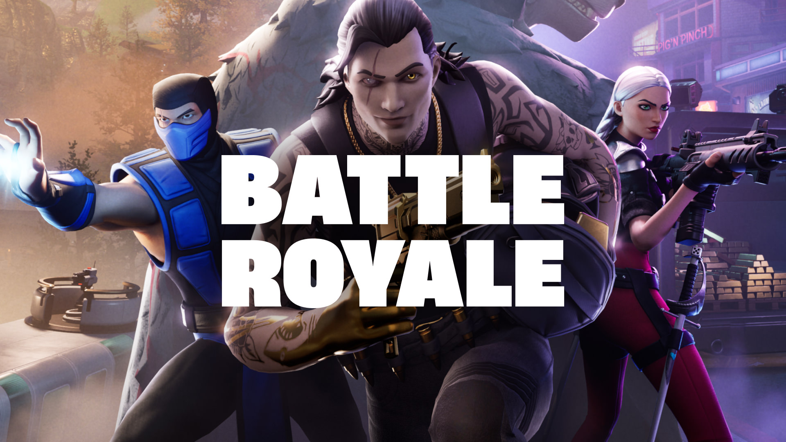

Como surgiu o Fortnite?
Fortnite é um jogo desenvolvido pela Epic Games. O projeto começou como um jogo de sobrevivência e construção, antes de ganhar o famoso modo Battle Royale.
O Battle Royale fez o jogo alcançar uma enorme popularidade e transformou Fortnite em um fenômeno mundial.

Evolução
Durante os anos, o jogo recebeu novas temporadas, mapas, personagens, armas, eventos e colaborações com outras marcas e franquias.
Principais características
- Construção
- Combates
- Temporadas
- Eventos
- Colaborações